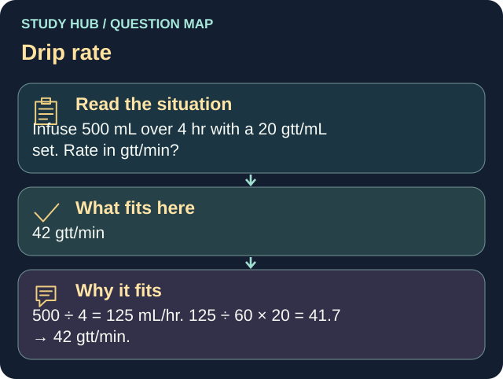

Infuse 500 mL over 4 hr with a 20 gtt/mL set. Rate in gtt/min?
Answer
42 gtt/min
Reasoning
500 ÷ 4 = 125 mL/hr. 125 ÷ 60 × 20 = 41.7 → 42 gtt/min.
Why the other answers do not fit
- 25 gtt/min
125 ÷ 60 × 20 = 41.7 → 42 gtt/min.
- 31 gtt/min
125 ÷ 60 × 20 = 41.7 → 42 gtt/min.
- 60 gtt/min
125 ÷ 60 × 20 = 41.7 → 42 gtt/min.
